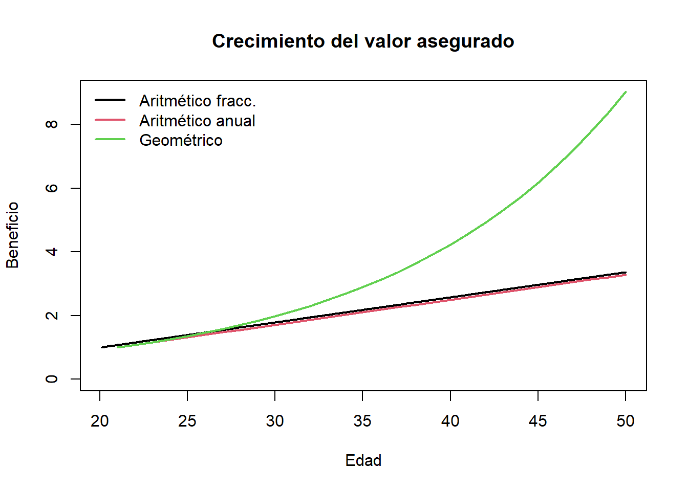

setwd("C:/Users/cubid/Desktop/QUARTO - MATERIAS UNAL/9 CÁLCULO ACTUARIAL/Corte 3 - Seguros")
library(readxl)
qx_mujeres <- read_excel("qx hombres y mujeres.xls",
sheet = "Asegurados - Muj",
col_types = c("numeric","numeric"))
edades <- qx_mujeres$X
qx <- qx_mujeres$qx
i <- 0.10 # tasa efectiva anual bruta
r <- 0.0788 # inflación anual proyectada
v <- 1/(1+i)Tarea3_Taller_Seguros_Quarto
Preparación de datos y parámetros
1. Prima entera con fraccionamiento eficiente
Fórmulas:
Tasa efectiva mensual:
\[ i_{(12)} = 12\bigl((1+i)^{1/12}-1\bigr) \]
Tablas de vida: \(\displaystyle l_{x+1} = l_x\,(1 - q_x),\quad l_0 = 100\,000.\)
Valores descontados:
\[ D_x = v^x\,l_x,\quad C_x = D_x\,v\,q_x \]
Momentos decrecientes:
\[ M_x = \sum_{j=x}^n C_j,\quad R_x = \sum_{j=x}^n M_j \]
Anualidad entera:
\[ A_x = \frac{M_x}{D_x},\quad \ddot{A}_x = \frac{R_x}{D_x} \]
Prima fraccionaria eficiente:
\[ \pi_x = \frac{i}{i_{(12)}}\Bigl(A_x \;+\; r\,(\ddot{A}_x - A_x)\Bigr). \]
calcular_primas_entero_fracc_efficient <- function(qx, VA, m) {
i_m <- m * ((1 + i)^(1/m) - 1)
n <- length(qx)
# l_x
lx <- numeric(n); lx[1] <- 100000
for(k in 1:(n-1)) lx[k+1] <- lx[k] * (1 - qx[k])
Dx <- v^edades * lx
Cx <- Dx * v * qx
Mx <- rev(cumsum(rev(Cx)))
Rx <- rev(cumsum(rev(Mx)))
Ax <- Mx / Dx
IA_x <- Rx / Dx
prima <- (i / i_m) * (Ax + r * (IA_x - Ax))
data.frame(
edad = edades,
qx = qx,
Ax = round(Ax, 6),
prima = round(prima*VA, 6)
)
}Uso: esta prima combina valor presente de pagos y ajuste por inflación fraccional.
prima_entera_aritmetica_frac <- calcular_primas_entero_fracc_efficient(
qx, VA = 500000000, m = 12
)
View(prima_entera_aritmetica_frac)2. Prima SAE fraccionaria
Fórmulas adicionales:
Corrección SAE (fraccional):
\[ \pi_x^{\mathrm{SAE}} = \frac{i}{i_{(12)}}\bigl(A_x + r(\ddot{A}_x - A_x)\bigr) \;+\; r\,\frac{i - i_{(12)}}{i_{(12)}^2}\,A_x. \]
calcular_primas_SAE_fracc <- function(qx, VA, m) {
n <- length(qx)
im <- m * ((1 + i)^(1/m) - 1)
lx <- numeric(n); lx[1] <- 100000
for(k in 1:(n-1)) lx[k+1] <- lx[k] * (1 - qx[k])
Dx <- v^edades * lx
Cx <- Dx * v * qx
Mx <- rev(cumsum(rev(Cx)))
Rx <- rev(cumsum(rev(Mx)))
Ax <- Mx / Dx
IA_x <- Rx / Dx
prima_SAE <- (i / im) * (Ax + r * (IA_x - Ax)) +
(r * ((i - im) / im^2) * Ax)
data.frame(
edad = edades,
qx = qx,
Ax = round(Ax, 6),
prima = round(prima_SAE * VA, 6)
)
}Interpretación: se añade término corrector de nivel para SAE.
prima_entera_aritmetica_frac_m <- calcular_primas_SAE_fracc(
qx, VA = 500000000, m = 12
)
View(prima_entera_aritmetica_frac_m)3. Prima con crecimiento geométrico
Fórmulas:
Tasa real efectiva:
\[ e = \frac{1+i}{1+r} - 1,\quad v_e = \frac{1}{1+e}. \]
Valores descontados real:
\[ D_x^{(e)}=v_e^x\,l_x,\quad C_x^{(e)}=D_x^{(e)}\,v_e\,q_x. \]
Anualidad real:
\[ A_x^{(e)}=\frac{\sum_{j=x}^n C_j^{(e)}}{D_x^{(e)}}. \]
Prima geométrica:
\[ \pi_x = \frac{i}{i_{(12)}}\,\frac{A_x^{(e)}}{1+r}. \]
e <- (1 + i)/(1 + r) - 1
Ve <- 1 / (1 + e)
calcular_primas_geom_creciente <- function(qx, VA, m) {
n <- length(qx)
i_m <- m * ((1 + i)^(1/m) - 1)
lx <- numeric(n); lx[1] <- 100000
for(k in 1:(n-1)) lx[k+1] <- lx[k] * (1 - qx[k])
Dx_e <- Ve^edades * lx
Cx_e <- Dx_e * Ve * qx
Mx_e <- rev(cumsum(rev(Cx_e)))
Ax_e <- Mx_e / Dx_e
prima <- (i / i_m) * Ax_e / (1 + r)
data.frame(
edad = edades,
qx = qx,
Ax_e = round(Ax_e, 6),
prima = round(prima * VA, 6)
)
}Uso: interesante para seguros reajustados solo por inflación.
prima_geometrica_frac <- calcular_primas_geom_creciente(
qx, VA = 500000000, m = 12
)
View(prima_geometrica_frac)4. Comparación de crecimientos del valor asegurado
No hay función aquí; se grafica:
- Aritmético fraccional: \(1 + r\,(k-1)/m\).
- Aritmético anual: \(1 + r\,(t-edad_{start}-1)\).
- Geométrico anual: \((1+r)^{t-edad_{start}-1}\).
r <- 0.0788; m <- 12
edad_inicio <- 20; edad_fin <- 50
ed_int <- (edad_inicio+1):edad_fin
benef2 <- 1 + r*(ed_int-(edad_inicio+1))
k <- 1:((edad_fin-edad_inicio)*m)
ti <- edad_inicio + k/m
benef1 <- 1 + r*((k-1)/m)
benef3 <- (1+r)^(ed_int-(edad_inicio+1))
plot(ti, benef1, type="l", col=1, lwd=2,
ylim=c(0,max(benef1,benef2,benef3)),
xlab="Edad", ylab="Beneficio",
main="Crecimiento del valor asegurado")
lines(ed_int, benef2, col=2, lwd=2)
lines(ed_int, benef3, col=3, lwd=2)
legend("topleft",
legend=c("Aritmético fracc.","Aritmético anual","Geométrico"),
col=1:3, lwd=2, bty="n")
5. Tabla comparativa de primas
VA <- 500000000; m <- 12
aritm <- calcular_primas_entero_fracc_efficient(qx, VA, m)
aritm_m <- calcular_primas_SAE_fracc(qx, VA, m)
geom <- calcular_primas_geom_creciente(qx, VA, m)
tabla_comparativa <- data.frame(
Edad = edades,
Seguro1_Aritmético = aritm$prima,
Seguro2_Aritmético_m = aritm_m$prima,
Seguro3_Geométrico = geom$prima
)
View(tabla_comparativa)